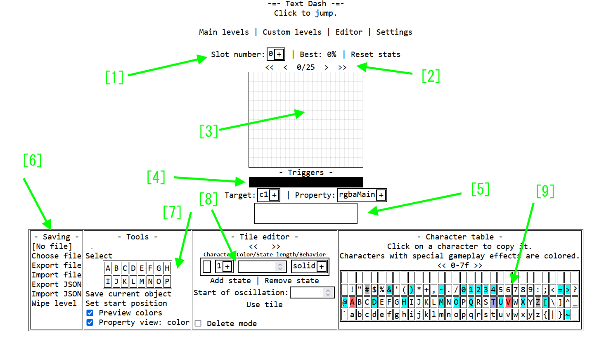
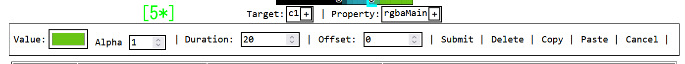
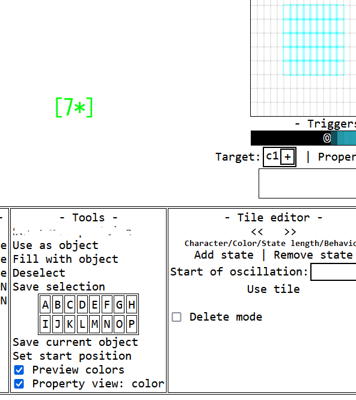

Editor guide



1. selection header
Slot numbers allow you to choose what level to edit; there are 32 slots total. You can also see the best score and reset it, but that doesn't really matter for the ediotr
.
2. editor movement controls
The middle number shows the current left edge X position and current level length.
Hold down the arrows to move the editor left or right; the double arrow is 10 times faster
3. Editor display
This shows a live preview of the level, and in order to do anything, you have to click the tiles here
.
4. trigger row
To add triggers that change various lever properties, you have to first select the trigger target (like a color, etc.) using the "target" selector, then the exact property with the other selector. After this, you click on the row above to add a trigger that will activate at the specified position and will open the trigger option menu (see Section 5). You can also click on an already existing trigger to edit it.
The trigger row will also show a live preview of the triggger's value over the X position and show the location of triggers with a circle. For numeric types, a line graph is shown
.
5. Trigger Options
When you click to add a trigger, you'll see the options appear here. By default, it is empty; see Figure 5* for how it looks when you click on the trigger row
You can enter the values for the trigger here. "Value is what the eproerty will be set to, duration is how long this will take, and offset adds a dela before the trigger applies it seffect
The other options will only appear when they are needed, but they should be fairly self-explanatory. Note that you can paste between triggers of the same 'data type," e.g., numeric, color, etc., even if they have different targets.
6. saving submenu
You can manipulate the level's data here. export/import JSON will create or take a text file, which can be rather large. An export/import file will create or take a compressed data file, which is much smaller but can take some time to encode. For JSON import, simply paste the text into the box, but for file import, you have to select the file first using the 'Choose file" button.
All export and import functions read and write from the level in the currently opened slot. "Wipe level" will remove the level in the current slot.
7. Tools submenu
There are a variety of tools in this section, but the main tools require you to select some objects. To select some objects, click on the "select" option, then choose the two corners of the selection region on the editor display. (You can select a single tile by double-clicking it.) The selection will be shown in cyan outlines. When you have an active selection, the tool menu gains some extra options; see figure 7*
The extra options are: "Use as object" sets the thing you place on click to the current selection; this can be multiple tiles too. "Fill with objet" will fill the selection with the object you're placing; if there are multiple objects, the selection will be filled in a tiled manner. "Save object" will allow you to save the selection as a custom object (see later in this section). The select option will turn into "Deselect, which will remove the selection.
For the custom object menu, when you click either Save Selection or Save Current Tile, it will prompt you to click one of the slots labeled A-P. Once you do, it will be saved, and you can hover over a slot to preview its contents and click on it to set your current tile to the thing stored there.
"Set start position" will allow you to set a point to playtest from, click the text, then choose a position on the editor display, and enter the requested values (see addendum).
The bottom toggles are the display options; "preview mode" toggles between real visuals and visuals showing color based on tile properties; the bottom toggle sets what property will be displayed in non-preview mode.
8. tile submenu
You can set what tile you are adding to the editor here. The way tiles work is that they cycle through the given states, each of which lasts for a specified time. Use the options given in the menu to change them.
Character is what will be shown; you can enter up to two characters, but only the first one will be used. This is necessary for emoji support, so just deal with it. color group is what triggers it to transform under, behavior is how it interacts with the player, and state length is how much time this state lasts for<
You can also use add/remove state at the bottom. Make sure to click "Use tile" to actually set the tile you are using!
At the bottom, you can toggle "delete mode." It allows you to delete objects; don't forget about setting this because it overrides everything.
9. Character table
If you click on a character here, it will be copied to your clipboard. Characters are colored according to their default behavior (see addendum). Use the top arrows to change pages, or click on the single number to go to a specified code point.
Addendum
behaviro colors
white/pale: none
black/gray: solid,
bluish gray: semisolid (can stand on and jump through)
red: deadly
cyan: special effects (property must be set to "default" for the effect to be applied ingame)
gamemode numbers
0:jumping icon (X)
1.wave (>)
2: gravity ball (O)
3: spider (M)
4: flappy bird (U)
5: skateboard (Đ)
AI summary which i decided to include for some reason
Editor Guide
The editor guide is divided into nine sections, each covering a specific aspect of the editor's functionality.
1. Selection Header
The selection header allows you to choose which level to edit, with 32 slots available. You can also view the best score and reset it, but this doesn't affect the editor.
2. Editor Movement Controls
The middle number displays the current left edge X position and current level length. To move the editor left or right, hold down the arrows, with double arrow being 10 times faster.
3. Editor Display
This section shows a live preview of the level, and you must click on tiles to make changes.
4. Trigger Row
To add triggers that change level properties, select the trigger target (e.g., color) using the "target" selector, then the exact property with the other selector. Click on an existing trigger to edit it. The trigger row shows a live preview of the trigger's value over the X position and displays the location of triggers with a circle.
5. Trigger Options
When adding a trigger, you'll see options appear here. Enter values for the trigger, including what property will be set, duration, and offset. Other options will appear when needed.
6. Saving Submenu
You can manipulate level data here, including exporting and importing JSON or compressed data files. Note that all export and import functions read and write from the currently open level slot.
7. Tools Submenu
This section provides various tools for selecting objects. Click "select" to choose corners of a selection region on the editor display. You can select a single tile by double-clicking it. Extra options become available when you have an active selection.
8. Tile Submenu
Set what tile you're adding to the editor here. Each tile cycles through states with specified durations. Use options to change states and character colors.
9. Character Table
Click on a character here to copy it to your clipboard. Characters are colored according to their default behavior (see addendum).
Addendum
Behavior colors: white/pale = none, black/gray = solid, bluish gray = semisolid, red = deadly, cyan = special effects
Game mode numbers: 0 = jumping icon (X), 1 = wave (>), 2 = gravity ball (O), 3 = spider (M), 4 = flappy bird (U), 5 = skateboard (Đ)